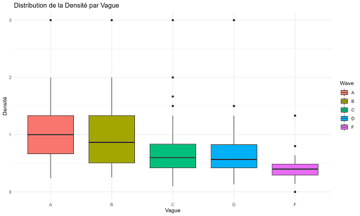

Analyse spatiale et longitudinale des réseaux personnels : Mobilité, dispersion géographique et structuration des liens sociaux.
1. Objectif de l'étude

Dans le cadre de mon master, j'ai réalisé ce projet qui cherchait à répondre à cette question clé : Comment la dispersion géographique et l'évolution des réseaux personnels reflètent-elles les trajectoires
de vie des individus ?
Mon objectif était de démontrer comment l'éloignement ou la proximité des liens sociaux affecte l'évolution du réseau (sa taille, sa densité) lorsqu'un individu connaît un changement majeur (déménagement, nouvel emploi).
2. Présentation des données
- Vague A (1995) :
- 87 individus
- Vague B (1998) :
- 70 individus
- Vague C (2001) :
- 66 individus
- Vague D (2004) :
- 60 individus
- Vague F (2015) :
- 21 individus
Pour réaliser cette étude, j'ai utilisé les données du Panel de Caen. Ces données proviennent d'une étude longitudinale initiée par Claire Bidart, Marion Maisonobe et Gil Viry. Ce panel a suivi 87 jeunes adultes résidant à Caen, initialement âgés
de 17 à 23 ans, sur une longue période s'étendant de 1995 à 2015. L'enquête a été menée en cinq vagues successives, permettant d'avoir une vision dynamique de non figée des relations.
Au total, cette base de données permet d'analyser l’évolution des liens sociaux à travers le temps et la mobilité.
3. Nettoyage des données
La préparation et le nettoyage des données ont été réalisés entièrement sous R. J'ai mobilisé plusieurs librairies clés : principalement tidyverse pour la manipulation et la transformation des données, igraph pour l'analyse des réseaux, et sf et mapsf pour le traitement et la cartographie des données spatiales.
- J'ai d'abord filtré la base pour isoler les informations pertinentes, notamment les lieux de résidence, les liens sociaux rapportés (taille du réseau) et les variables socio-démographiques (sexe et âge).
- J'ai ensuite créé et calculé pour chaque réseau (à chaque vague) les trois métriques essentielles : la taille du réseau (nombre total de relations), la densité du réseau (la proportion de liens réellement présents par rapport au nombre maximal possible, après avoir nettoyé les boucles), la transitivité (qui mesure la probabilité que les amis d'un individu soient amis entre eux).
- J'ai finalement comparé la taille du réseau entre les vagues A et F pour déterminer le type de dynamique de chaque individu, expansion, contraction ou stable, créant ainsi une variable catégorielle indispensable pour l'analyse longitudinale.
4. Résultats : dynamique et évolution des réseaux
L'analyse de la densité des réseaux révèle une diminution progressive entre les premières vagues (A et B) et les dernières (C, D et F). Cette tendance, où les liens se multiplient sans être très connectés entre eux, suggère une évolution des réseaux vers plus de diversité. Cela rejoint l'idée de Granovetter selon laquelle les liens faibles, bien qu’ils réduisent la densité, sont importants pour accéder à de nouvelles opportunités.

La taille des réseaux personnels est souvent concentrée autour de petites ou moyennes valeurs (entre 3 et 8 relations). Ces variations sont fortement corrélées aux étapes de vie (passage aux études, emploi, relation amoureuse) qui ont pu influencer la taille des réseaux au fil des vagues (A à F).
Le graphique montre une nette dominance des réseaux en expansion, traduisant une augmentation des interactions sociales et une diversification des lieux fréquentés.
5. Résultats : facteurs explicatifs
L'analyse des facteurs (genre et âge) est primordiale pour mieux comprendre la mobilité. Un test T a confirmé une différence statistiquement significative (p-value = 0.01542) : les hommes ont une mobilité légèrement plus élevée (moyenne de 0.855) que les femmes (0.828). De plus, le test ANOVA révèle que la mobilité varie significativement selon les tranches d’âge, les individus plus âgés ayant une tendance à être un peu plus mobiles.

Le graphique présente la relation entre la taille du réseau (le nombre de lieux différents visités), et la mobilité totale (la somme des déplacements) pour chaque individu. La ligne rouge représente la régression linéaire, c'est-à-dire la tendance générale entre ces deux variables. Cela met en évidence une relation forte et positive entre la taille du réseau et la mobilité totale (pente montante sur la régression linéaire). Cette découverte est cruciale : les individus ayant un grand réseau ont tendance à avoir une mobilité plus élevée. Elle renforce les conclusions précédentes sur les liens faibles et la diversification géographique des alters.
| Âge | Genre | Moyenne | Écart-type |
|---|---|---|---|
| 17-23 ans | Femme | 0.793 | 0.406 |
| Homme | 0.832 | 0.375 | |
| 20-26 ans | Femme | 0.836 | 0.371 |
| Homme | 0.818 | 0.387 | |
| 23-29 ans | Femme | 0.816 | 0.388 |
| Homme | 0.858 | 0.350 | |
| 26-32 ans | Femme | 0.830 | 0.376 |
| Homme | 0.876 | 0.329 | |
| 37-43 ans | Femme | 0.875 | 0.332 |
| Homme | 0.862 | 0.346 |
6. Étude de cas : Sylvain (Ego 40)

L'analyse du parcours de Sylvain (Ego 40) offre un aperçu concret des dynamiques globales. Son réseau a connu différentes phases d'évolution entre 1995 et 2015 (Vagues A à F). Le graphique illustre une diversification particulièrement marquée en vague D (en 2004). Ce changement notable, qu'il s'agisse de l'expansion du réseau ou de sa dispersion géographique, est très probablement lié à une transition de vie majeure (nouveau cycle d'études, emploi, déménagement). Un entretien approfondi avec Sylvain permettrait de confirmer et de contextualiser ces changements quantitatifs.
7. Conclusion
En conclusion, ce projet met en lumière l'influence réciproque entre les réseaux personnels et les trajectoires de vie, confirmant que la mobilité et la configuration des réseaux varient en fonction du genre, de l'âge et de la structure des liens. Les résultats, notamment la forte corrélation entre la taille du réseau et la mobilité, s'alignent sur les concepts de liens forts et faibles de Granovetter et la diversification géographique des réseaux. Ce projet démontre l'influence de la mobilité sur les trajectoires sociales et la capacité des individus à gérer stratégiquement leurs liens au fil du temps.
8. Compétences développées :
- Maîtrise de R et d'analyse statistique : Application de tests statistiques avancés (Test T, ANOVA) et utilisation des packages "tidyverse", "igraph", "sf" et "mapsf".
- Gestion de données longitudinales : Traitement, manipulation et harmonisation de données complexes du Panel de Caen collectées sur une longue période (1995-2015).
- Analyse spatiale et des réseaux : Calcul d'indicateurs de réseaux (taille, densité, transitivité, mobilité) et typologie de profils.
- Interprétation sociologique : Capacité à contextualiser les résultats statistiques dans un cadre théorique (Granovetter, trajectoires de vie, structuration sociale des réseaux).